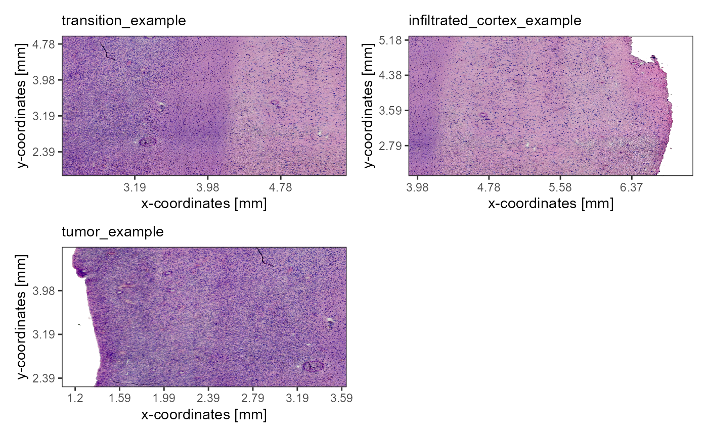
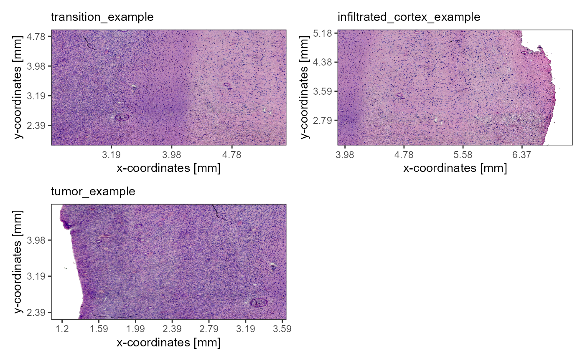
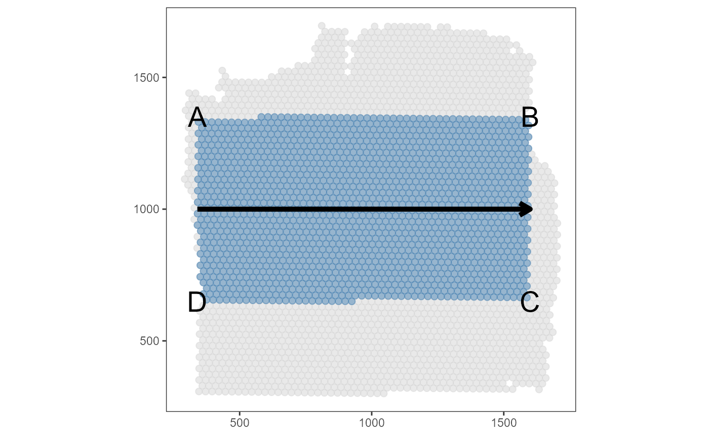
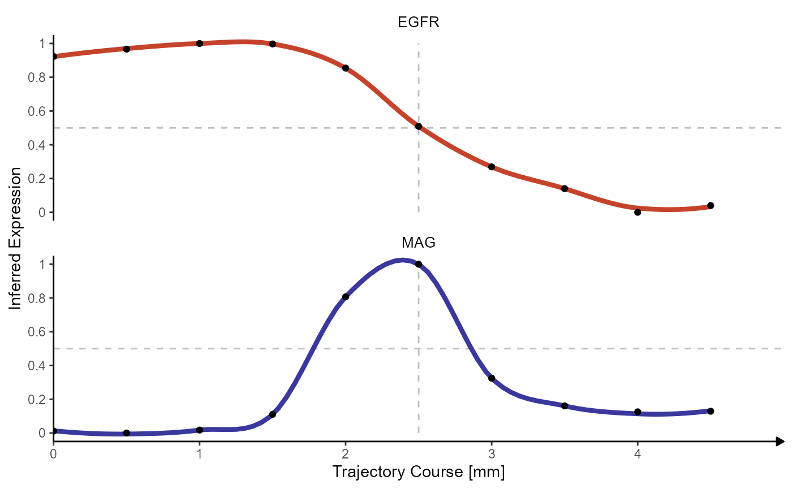

Spatial Trajectory Screening - Code & Concept
Jan Kueckelhaus
2022-08-20
cc-spatial-trajectory-screening.Rmd2. Introduction & overview
With spatial trajectory analysis SPATA2 introduces a new approach to find, analyze and visualize differently expressed genes in a spatial context. While the classic differential gene expression analyzes differences between groups as a whole it neglects changes of expression levels that can only be observed while maintaining the spatial dimensions. Spatial trajectories allow to answer questions that include such a spatial component. In how far do expression levels change the more one moves towards a region of interest or away from it? Which genes follow the same pattern along these paths?
The spatial trajectory screening algorithm can be divided in three parts.
- 1.) Setting up a spatial trajectory (drawing and vector projection)
- 2.) Inferring gene expression changes along the trajectory.
- 3.) Screening gene expression changes for biologically interesting behaviors by fitting expression changes against predefined models.
This vignette explains all steps of part 1.) and 2.) of the algorithm. Part 3.) is explained in the tutorial on Model Fitting in Spatial Transcriptomic Studies.
As an example we are using a spatial transcriptomic sample of a central nervous system malignancy that features three different, adjacent histological areas: Tumor, a transition zone as well as infiltrated cortex.
library(SPATA2)
library(SPATAData)
library(tidyverse)
object_t269 <- downloadSpataObject(sample_name = "269_T")
# load example image annotations
data("image_annotations")
object_t269 <-
setImageAnnotations(
object = object_t269,
img_anns = image_annotations[["269_T"]],
overwrite = TRUE
)
# plot results
plotImageGgplot(object = object_t269) +
ggpLayerFrameByCoords(object = object_t269) +
ggpLayerThemeCoords()
plotImageAnnotations(
object = object_t269,
tags = "hist_example",
square = TRUE,
expand = 0.5,
encircle = FALSE,
nrow = 2,
display_caption = FALSE
) 

3. Setting up a spatial trajectory
The example spatial trajectory that we are using throughout this
vignette was drawn via the function addSpatialTrajectory()
and is displayed in figure 1.1. It shows a surface plot that is colored
by the expression of gene MPL. Next to it the example
trajectory is visualized which runs across the whole sample indicating a
from tumor to cortex-direction.
# creates trajectory manually
# alternatively you can draw it interactively with `createSpatialTrajectories()`
object_t269 <-
addSpatialTrajectory(
object = object_t269,
id = "horizontal_mid",
width = "1.5mm",
start = c(x = "1.35mm", y = "4mm"),
end = c(x = "6.35mm", y = "4mm"),
overwrite = TRUE
)
plotSurface(object = object_t269, color_by = "MAG")
plotSpatialTrajectories(object = object_t269, ids = "horizontal_mid", color_by = "MAG")Both functions, createSpatialTrajectories() and
addSpatialTrajectory() result in the same. They set
up spatial trajectories by doing the necessary computations and by
storing the results in the spata2 object.
createSpatialTrajectories() gives access to an interactive
interface where start- and endpoint are set by clicking on the plot.
With addSpatialTrajectory() start- and endpoint are set
programmatically.
The process of setting up a trajectory can be splitted into three steps:
- Step 1: Drawing the trajectory by setting the trajectory’s start and endpoint.
- Step 2: Filtering the barcode-spots that fall into the trajectory’s reach.
- Step 3: Integrating the trajectory’s direction by setting every barcode-spot in relation to the trajectory’s origin and computing the projection length.
The chapters below elaborate on each of these three steps and shows
the underlying code that is needed to reproduce what is happening in the
functions createSpatialTrajectories() or
addSpatialTrajectory().
3.1 Drawing the trajectory
In order to draw the trajectory a surface plot is required.
Extracting the coordinates of all barcode-spots via
getCoordinates() provides the basic data.frame needed.
# get coordinate of barcode-spots
coords_df <- getCoordsDf(object = object_t269)
# show results
coords_df## # A tibble: 3,213 x 4
## barcodes sample x y
## <chr> <chr> <dbl> <dbl>
## 1 AAACAAGTATCTCCCA-1 269_T 1450. 731.
## 2 AAACACCAATAACTGC-1 269_T 411. 547.
## 3 AAACAGAGCGACTCCT-1 269_T 1359. 1516
## 4 AAACATTTCCCGGATT-1 269_T 1386. 493.
## 5 AAACCCGAACGAAATC-1 269_T 1614. 838.
## 6 AAACCGGGTAGGTACC-1 269_T 527. 916.
## 7 AAACCGTTCGTCCAGG-1 269_T 700. 696
## 8 AAACCTAAGCAGCCGG-1 269_T 1210. 408.
## 9 AAACCTCATGAAGTTG-1 269_T 416. 1026.
## 10 AAACGAGACGGTTGAT-1 269_T 1167. 1061.
## # i 3,203 more rowsThe start- and endpoint of the trajectory are determined and stored in a data.frame like the one shown below.
## [1] 338.9095 1004.1762 1594.1297
## attr(,"unit")
## [1] "px"
# using pixel units here
segm_df <-
tibble(
x = 340,
y = 1000,
xend = 1600,
yend = 1000,
part = "part_1"
)
# show results
segm_df## # A tibble: 1 x 5
## x y xend yend part
## <dbl> <dbl> <dbl> <dbl> <chr>
## 1 340 1000 1600 1000 part_1Mapping the x- and y-coordinates of the barcode-spots to the respective x- and y-aesthetics results in a basic surface plot. The data.frame above contains information about start- and endpoint of the trajectory which can be used to plot the trajectory’s course.
no_panel_grid <-
theme(
panel.grid.major = element_blank(),
panel.grid.minor = element_blank()
)
# display x- and y-coordinates of all barcode-spots
surface_plot <-
ggplot(data = coords_df, mapping = aes(x = x, y = y)) +
geom_point(color = "lightgrey", alpha = 0.5, size = 2) + # provide point geometry
scale_color_add_on(aes = "fill", variable = "discrete", clrp = "milo") + # SPATA-intern wrapper
theme_bw() +
coord_equal() +
no_panel_grid +
labs(x = NULL, y = NULL)
# save the trajectory layer
trajectory <-
geom_segment(
data = segm_df,
mapping = aes(x = x, y = y, xend = xend, yend = yend),
size = 1.75,
arrow = arrow(length = unit(0.125, "inches"))
)
# plot results
surface_plot +
labs(subtitle = "a) Surface")
surface_plot +
trajectory +
labs(subtitle = "b) Surface + trajectory")3.2 Filtering barcode-spots
A trajectory includes only a subset of barcode-spots. To determine the barcode-spots that fall into the trajectory’s reach the trajectory’s width needs to be determined.
With that value two additional vectors can be computed that each cross the trajectory’s start- and endpoint orthogonally. Start- and endpoint of these crossing vectors determine the vertices of the rectangle that includes all the barcode-spots that fall into the trajectory’s reach. The higher the value for the trajectory’s width the wider it gets and the more barcode-spots it includes.
# determines the width of the trajectory (in pixel)
trajectory_width <- 350
start_point <- as.numeric(segm_df[1:2])
end_point <- as.numeric(segm_df[3:4])
trajectory_vec <- end_point - start_point
# show results
trajectory_vec## [1] 1260 0
# factor with which to compute the width vector
trajectory_magnitude <- sqrt((trajectory_vec[1])^2 + (trajectory_vec[2])^2)
trajectory_factor <- trajectory_width / trajectory_magnitude
# orthogonal trajectory vector
orth_trajectory_vec <- (c(-trajectory_vec[2], trajectory_vec[1]) * trajectory_factor)
# show results
orth_trajectory_vec## [1] 0 350
# determine trajectory frame points 'tfps' making up the square that embraces
# the points
tfp1.1 <- start_point + orth_trajectory_vec
tfp1.2 <- start_point - orth_trajectory_vec
tfp2.1 <- end_point - orth_trajectory_vec
tfp2.2 <- end_point + orth_trajectory_vec
rectangular_df <-
tibble(
x = c(tfp1.1[1], tfp1.2[1], tfp2.1[1], tfp2.2[1]),
y = c(tfp1.1[2], tfp1.2[2], tfp2.1[2], tfp2.2[2]),
label = c("A", "D", "C", "B")
)
# show results
rectangular_df## # A tibble: 4 x 3
## x y label
## <dbl> <dbl> <chr>
## 1 340 1350 A
## 2 340 650 D
## 3 1600 650 C
## 4 1600 1350 BThe function point.in.polygon()of the
sp-package allows to filter the data.frame that
contains information about all barcode-spots for those spots that fall
into the polygon and thus in the trajectory’s reach.
# get a logical vector indicating if a barcode spot falls into the trajectory's reach or not
positions <-
sp::point.in.polygon(
point.x = coords_df$x,
point.y = coords_df$y,
pol.x = rectangular_df$x,
pol.y = rectangular_df$y
)
# show results
head(positions, 10)## [1] 1 0 0 0 0 1 1 0 1 1
# keep only those that fall into the trajectory's reach (not 0)
barcode_spots_of_interest <- coords_df[as.logical(positions), ]
# visualize filtered spots
trajectory_spots <-
geom_point(
data = barcode_spots_of_interest,
mapping = aes(x = x, y = y),
alpha = 0.5,
size = 2,
color = "steelblue"
)
# visualize the vertices of the polygon
# based on which the barcode-spots were filtered
vertices <-
geom_text(
data = rectangular_df,
mapping = aes(x = x, y = y, label = label),
size = 7.5
)
# plot results
surface_plot + trajectory_spots + trajectory + vertices
3.3 Integrating a spatial direction
In order to integrate the direction of the trajectory as an informative variable every barcode-spot needs to be set into relation to the trajectory’s course. The closer a barcode-spot is located towards the trajectory’s origin the smaller the respective value needs to be.
This is achieved by projecting the barcode-spots position onto the vector that corresponds to the trajectory’s course. The local coordinate system of the figure below is build around all relevant barcode-spots whereby it’s x- and y-axis correspond to the trajectory’s width (local width axis, lwa) and the trajectory itself (local length axis, lla), albeit displaced towards the edge.
# set up a local coordinate system
lcs <- data.frame(
x = c(tfp1.1[1], tfp1.1[1]),
y = c(tfp1.1[2], tfp1.1[2]),
xend = c(tfp2.2[1], tfp1.2[1]),
yend = c(tfp2.2[2], tfp1.2[2]),
use = c("local length axis", "local width axis")
)
# show results
lcs## x y xend yend use
## 1 340 1350 1600 1350 local length axis
## 2 340 1350 340 650 local width axis
# local coordinate system layer
local_coordinate_system <-
list(
geom_segment(
data = lcs,
mapping = aes(x = x, y = y, xend = xend, yend = yend),
arrow = arrow(length = unit(0.125, "inches")),
size = 1.5
)
)
# plot results
surface_plot +
trajectory_spots +
local_coordinate_system
The local length axis inherits it’s direction and course from the original trajectory. In order to arrange the barcode-spots according to the trajectory’s direction their projection onto the local length axis needs to be calculated via vector-projection which requires two main steps.
1.) Calculate vector a that connects the barcode-spot of interest to the origin of the local coordinate system. Then project vector a onto the local length axis (lla) such that \(\vec{proj} = \frac{\vec{sto} * \vec{traj}}{||\vec{traj}||^2} * \vec{traj}\)
2.) Calculate the magnitude of the vector that corresponds to the projection: \(proj.length = |\vec{proj}|\)
The higher the calculated projection length the higher the distance between the barcode-spot and the origin of the trajectory.
vector_projection <- function(lcs, x_coordinate, y_coordinate){
# vector from point of interest to origin of local coord system: vector to origin 'vto'
vto <- c((x_coordinate - lcs$x[1]), (y_coordinate - lcs$y[1]))
# define local length axis (= relocated trajectory): 'lla'
lla <- c((lcs$xend[1] - lcs$x[1]), (lcs$yend[1] - lcs$y[1]))
# define lambda coefficient
lambda <- ((vto[1] * lla[1]) + (vto[2] * lla[2])) / sqrt((lla[1])^2 + (lla[2])^2)^2
# projecting vector on local length axis
pv <- lambda * (lla)
# compute the length of the projected vector -> projection length!
res <- sqrt((pv[1])^2 + (pv[2])^2)
# return the result
return(res)
}
# points of interest data.frame
barcode_spots_arranged <-
group_by(.data = barcode_spots_of_interest, barcodes) %>%
mutate(projection_length = vector_projection(lcs = lcs, x, y)) %>%
arrange(projection_length) %>% # arrange barcodes according to their projection value
ungroup()
# show results
barcode_spots_arranged## # A tibble: 1,623 x 5
## barcodes sample x y projection_length
## <chr> <chr> <dbl> <dbl> <dbl>
## 1 GATCGGATAGAACCAT-1 269_T 340. 939. 0.225
## 2 ACGCTGTGAGGCGTAG-1 269_T 341. 983. 0.624
## 3 GTCTACTCAATTACAA-1 269_T 341. 1026. 1.02
## 4 CACTCGGTTAGGAGGA-1 269_T 341. 1070 1.42
## 5 GGTTGTGTAGCCTGGC-1 269_T 342. 1113. 2.22
## 6 GCGTTATATTTGGAAC-1 269_T 343. 1157. 2.62
## 7 GTCAGTTTGGTAGTCG-1 269_T 343. 1200. 3.02
## 8 GCTAAGTAAAGGCGAT-1 269_T 343. 1244 3.42
## 9 GCTCGCGGTTCCGCTC-1 269_T 344. 1288. 3.82
## 10 GCAGATCCTCGCAAAT-1 269_T 344. 1331. 4.22
## # i 1,613 more rowsThe projection length of every barcode spot in relation to the spatial trajectory can be visualized by coloring the spots accordingly.
# projection length layer
projected_length <-
list(
geom_point(
data = barcode_spots_arranged,
size = 2,
mapping = aes(x = x, y = y, color = projection_length)
),
scale_color_add_on(clrsp = "plasma"),
labs(color = "Projection-\nLength (PL)")
)
# plot results
surface_plot + projected_length + local_coordinate_systemThis is what happens when a spatial trajectory is added via
addSpatialTrajectory() or created interactively by
createSpatialTrajectories() (which in turn uses
addSpatialtrajectory()). The results, namely the projection
length information of the barcode-spots in combination with the course
of the trajectory are stored in an S4 object of class
SpatialTrajectory within the spata2
object.
traj_obj <- getSpatialTrajectory(object = object_t269, id = "horizontal_mid")
traj_obj## An object of class "SpatialTrajectory"
## Slot "coords":
## # A tibble: 3,213 x 4
## barcodes sample x y
## <chr> <chr> <dbl> <dbl>
## 1 AAACAAGTATCTCCCA-1 269_T 1450. 731.
## 2 AAACACCAATAACTGC-1 269_T 411. 547.
## 3 AAACAGAGCGACTCCT-1 269_T 1359. 1516
## 4 AAACATTTCCCGGATT-1 269_T 1386. 493.
## 5 AAACCCGAACGAAATC-1 269_T 1614. 838.
## 6 AAACCGGGTAGGTACC-1 269_T 527. 916.
## 7 AAACCGTTCGTCCAGG-1 269_T 700. 696
## 8 AAACCTAAGCAGCCGG-1 269_T 1210. 408.
## 9 AAACCTCATGAAGTTG-1 269_T 416. 1026.
## 10 AAACGAGACGGTTGAT-1 269_T 1167. 1061.
## # i 3,203 more rows
##
## Slot "info":
## $current_dim
## [1] 1939 2000 3
##
## $current_just
## $current_just$angle
## [1] 0
##
## $current_just$flipped
## $current_just$flipped$horizontal
## [1] FALSE
##
## $current_just$flipped$vertical
## [1] FALSE
##
##
##
##
## Slot "width_unit":
## [1] "mm"
##
## Slot "comment":
## [1] ""
##
## Slot "id":
## [1] "horizontal_mid"
##
## Slot "projection":
## # A tibble: 1,733 x 6
## barcodes sample x y projection_length trajectory_part
## <chr> <chr> <dbl> <dbl> <dbl> <chr>
## 1 TGCGAATATGGGATTT-1 269_T 339. 852. 0.116 Part 1
## 2 TTGTGAGGCATGACGC-1 269_T 340. 896. 0.915 Part 1
## 3 GATCGGATAGAACCAT-1 269_T 340. 939. 1.32 Part 1
## 4 ACGCTGTGAGGCGTAG-1 269_T 341. 983. 1.71 Part 1
## 5 GTCTACTCAATTACAA-1 269_T 341. 1026. 2.11 Part 1
## 6 CACTCGGTTAGGAGGA-1 269_T 341. 1070 2.51 Part 1
## 7 GGTTGTGTAGCCTGGC-1 269_T 342. 1113. 3.31 Part 1
## 8 GCGTTATATTTGGAAC-1 269_T 343. 1157. 3.71 Part 1
## 9 GTCAGTTTGGTAGTCG-1 269_T 343. 1200. 4.11 Part 1
## 10 GCTAAGTAAAGGCGAT-1 269_T 343. 1244 4.51 Part 1
## # i 1,723 more rows
##
## Slot "sample":
## [1] "269_T"
##
## Slot "segment":
## x y xend yend part
## 1 338.9095 1004.176 1594.13 1004.176 part_1
##
## Slot "width":
## [1] 376.56614. Inferring expression changes of genes along the trajectory
The barcode-spots are now arranged according to their projection onto the trajectory. By assigning them to groups by their projection_length-values they are sorted into bins for which the average expression values are calculated and in return plotted against the trajectory’s direction. The example sorts the barcode-spots in 7 bins.
(A higher number of bins is recommended to increase the resolution. In fact, we recommend to determine the number of bins by specifying the binwidth. We stick to 7 during this example to keep the plots clear and easy to understand.)
# use n_bins to specify the number of bins explicitly for visualization purposes
# scroll down to the end of the vignette on why binwidth might be better
n_bins <- 10
barcode_spots_binned <-
mutate(
.data = barcode_spots_arranged,
bins_order = cut(projection_length, breaks = n_bins)
)
# show results
barcode_spots_binned## # A tibble: 1,623 x 6
## barcodes sample x y projection_length bins_order
## <chr> <chr> <dbl> <dbl> <dbl> <fct>
## 1 GATCGGATAGAACCAT-1 269_T 340. 939. 0.225 (-1.03,126]
## 2 ACGCTGTGAGGCGTAG-1 269_T 341. 983. 0.624 (-1.03,126]
## 3 GTCTACTCAATTACAA-1 269_T 341. 1026. 1.02 (-1.03,126]
## 4 CACTCGGTTAGGAGGA-1 269_T 341. 1070 1.42 (-1.03,126]
## 5 GGTTGTGTAGCCTGGC-1 269_T 342. 1113. 2.22 (-1.03,126]
## 6 GCGTTATATTTGGAAC-1 269_T 343. 1157. 2.62 (-1.03,126]
## 7 GTCAGTTTGGTAGTCG-1 269_T 343. 1200. 3.02 (-1.03,126]
## 8 GCTAAGTAAAGGCGAT-1 269_T 343. 1244 3.42 (-1.03,126]
## 9 GCTCGCGGTTCCGCTC-1 269_T 344. 1288. 3.82 (-1.03,126]
## 10 GCAGATCCTCGCAAAT-1 269_T 344. 1331. 4.22 (-1.03,126]
## # i 1,613 more rows
averaged_points <-
group_by(.data = barcode_spots_binned, bins_order) %>%
summarise(x = mean(x), y = mean(y)) %>%
mutate(
trajectory_order = as.numeric(bins_order) # convert factor levels to numbers
)
projection_length_binned <-
list(
geom_point(
data = barcode_spots_binned,
mapping = aes(x = x, y = y, color = bins_order)
)
)
order_averaged <-
list(
geom_point(
data = barcode_spots_binned,
mapping = aes(x = x, y = y, color = bins_order),
alpha = 0.3
),
geom_text(
data = averaged_points,
mapping = aes(x = x, y = y, color = bins_order, label = trajectory_order),
size = 10
)
)
# plot results
surface_plot +
projection_length_binned +
trajectory +
legendNone()
surface_plot +
order_averaged Using the barcodes-variable as the id variable expression-values (or any other kind of numeric variable) can be joined to the data.frame containing the arranged and grouped barcode-spots as shown in the data.frame below.
genes_of_interest <- c("EGFR", "MAG")
joined_df <-
joinWith(
object = object_t269,
spata_df = barcode_spots_binned,
genes = genes_of_interest
)
# show results
joined_df## # A tibble: 1,623 x 8
## barcodes sample x y projection_length bins_order EGFR MAG
## <chr> <chr> <dbl> <dbl> <dbl> <fct> <dbl> <dbl>
## 1 GATCGGATAGAACCAT~ 269_T 340. 939. 0.225 (-1.03,12~ 0.624 0
## 2 ACGCTGTGAGGCGTAG~ 269_T 341. 983. 0.624 (-1.03,12~ 0.659 0
## 3 GTCTACTCAATTACAA~ 269_T 341. 1026. 1.02 (-1.03,12~ 0.867 0
## 4 CACTCGGTTAGGAGGA~ 269_T 341. 1070 1.42 (-1.03,12~ 0.659 0
## 5 GGTTGTGTAGCCTGGC~ 269_T 342. 1113. 2.22 (-1.03,12~ 0.813 0
## 6 GCGTTATATTTGGAAC~ 269_T 343. 1157. 2.62 (-1.03,12~ 0.624 0
## 7 GTCAGTTTGGTAGTCG~ 269_T 343. 1200. 3.02 (-1.03,12~ 0.813 0
## 8 GCTAAGTAAAGGCGAT~ 269_T 343. 1244 3.42 (-1.03,12~ 0.483 0
## 9 GCTCGCGGTTCCGCTC~ 269_T 344. 1288. 3.82 (-1.03,12~ 0.416 0
## 10 GCAGATCCTCGCAAAT~ 269_T 344. 1331. 4.22 (-1.03,12~ 0.792 0
## # i 1,613 more rows
averaged_df <-
group_by(joined_df, bins_order) %>%
summarise(
across(
.cols = any_of(genes_of_interest),
.fns = ~ mean(.x)
)
)
# show results
averaged_df## # A tibble: 10 x 3
## bins_order EGFR MAG
## <fct> <dbl> <dbl>
## 1 (-1.03,126] 0.707 0.00738
## 2 (126,251] 0.734 0.00474
## 3 (251,376] 0.749 0.00920
## 4 (376,502] 0.748 0.0381
## 5 (502,627] 0.666 0.278
## 6 (627,753] 0.483 0.325
## 7 (753,878] 0.350 0.110
## 8 (878,1e+03] 0.275 0.0615
## 9 (1e+03,1.13e+03] 0.202 0.0501
## 10 (1.13e+03,1.26e+03] 0.223 0.0458
normalized_df <-
ungroup(averaged_df) %>%
mutate(
across(
.cols = any_of(genes_of_interest),
.fns = confuns::normalize
)
)
# show results
normalized_df## # A tibble: 10 x 3
## bins_order EGFR MAG
## <fct> <dbl> <dbl>
## 1 (-1.03,126] 0.924 0.00824
## 2 (126,251] 0.973 0
## 3 (251,376] 1 0.0139
## 4 (376,502] 0.999 0.104
## 5 (502,627] 0.849 0.852
## 6 (627,753] 0.513 1
## 7 (753,878] 0.270 0.328
## 8 (878,1e+03] 0.133 0.177
## 9 (1e+03,1.13e+03] 0 0.141
## 10 (1.13e+03,1.26e+03] 0.0384 0.128
plot_df <-
# shift to use facet_wrap
pivot_longer(
data = normalized_df,
cols = any_of(genes_of_interest),
names_to = "genes",
values_to = "values"
) %>%
mutate(trajectory_order = as.numeric(bins_order))
traj_plots <-
map(
.x = genes_of_interest,
.f = ~
plotSpatialTrajectories(
object = object_t269,
ids = "horizontal_mid",
color_by = .x,
sgmt_size = 1
)
)
# plot results
ggplot(plot_df, mapping = aes(x = trajectory_order, y = values)) +
geom_point(color = "blue", size = 2.5) +
geom_path(color = "blue") +
geom_smooth(
alpha = 0.5,
color = "red",
method = "loess",
formula = y ~ x,
span = 0.5
) +
theme_bw() +
scale_x_continuous(breaks = 1:n_bins, labels = 1:n_bins) +
facet_wrap(facets = . ~ genes, ncol = 1) +
labs(x = "Trajectory Order (Bins)", y = "Inferred Expression") | # use patchwork | operator
(traj_plots[[1]] / traj_plots[[2]])This is what happens in plotTrajectoryLineplot() and
plotTrajectoryHeatmap().
traj_df <-
getTrajectoryDf(
object = object_t269,
id = "horizontal_mid",
variables = genes_of_interest,
format = "wide"
)
# show results
traj_df## # A tibble: 1,733 x 8
## barcodes sample x y projection_length trajectory_part EGFR MAG
## <chr> <chr> <dbl> <dbl> <dbl> <chr> <dbl> <dbl>
## 1 TGCGAATATGG~ 269_T 339. 852. 0.116 Part 1 0.746 0
## 2 TTGTGAGGCAT~ 269_T 340. 896. 0.915 Part 1 0.746 0.245
## 3 GATCGGATAGA~ 269_T 340. 939. 1.32 Part 1 0.624 0
## 4 ACGCTGTGAGG~ 269_T 341. 983. 1.71 Part 1 0.659 0
## 5 GTCTACTCAAT~ 269_T 341. 1026. 2.11 Part 1 0.867 0
## 6 CACTCGGTTAG~ 269_T 341. 1070 2.51 Part 1 0.659 0
## 7 GGTTGTGTAGC~ 269_T 342. 1113. 3.31 Part 1 0.813 0
## 8 GCGTTATATTT~ 269_T 343. 1157. 3.71 Part 1 0.624 0
## 9 GTCAGTTTGGT~ 269_T 343. 1200. 4.11 Part 1 0.813 0
## 10 GCTAAGTAAAG~ 269_T 343. 1244 4.51 Part 1 0.483 0
## # i 1,723 more rows
plotTrajectoryLineplot(
object = object_t269,
id = "horizontal_mid",
variables = genes_of_interest,
ncol = 1,
n_bins = n_bins,
smooth_span = 0.5
) + geom_point()
plotTrajectoryHeatmap(
object = object_t269,
id = "horizontal_mid",
variables = genes_of_interest,
smooth_span = 0.2
)
5. Binwidth vs. number of bins
The resolution of the binning is set up via the argument
n_bins which explicitly specifies the number of bins
or binwidth which specifies the width of
each bin. For visualization purposes we chose n_binsin the
example above but we recommend to use the argument binwidth
and setting it to the distance between the barcode-spots using
getCCD(). This results in bins that contain one layer of
barcode-spot each.
bcsp_dist <- getCCD(object = object_t269, unit = "px")
# show results
bcsp_dist## [1] 25.1044
## attr(,"unit")
## [1] "px"
traj_df_small <-
traj_obj@projection %>%
filter(projection_length <= (getCCD(object_t269, "px")*20)) %>%
mutate(projection_length = round(projection_length, 5)) %>%
bin_projection_df(binwidth = bcsp_dist, n_bins = NA) %>%
mutate(proj_length_binned = as.factor(proj_length_binned))
# plot results
surface_plot +
geom_point(
data = traj_df_small,
mapping = aes(x = x, y = y, color = proj_length_binned)
) +
scale_color_add_on(
variable = traj_df_small[["proj_length_binned"]],
clrp = "milo"
) +
trajectory6. Screening gene expression changes
Click here to be guided to the vignette that explains how the inferred expression changes are fitted to models to find biologically relevant dynamics along the trajectory.